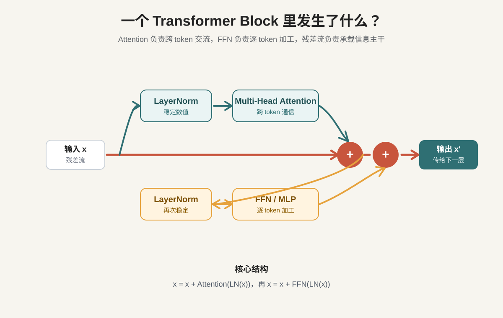
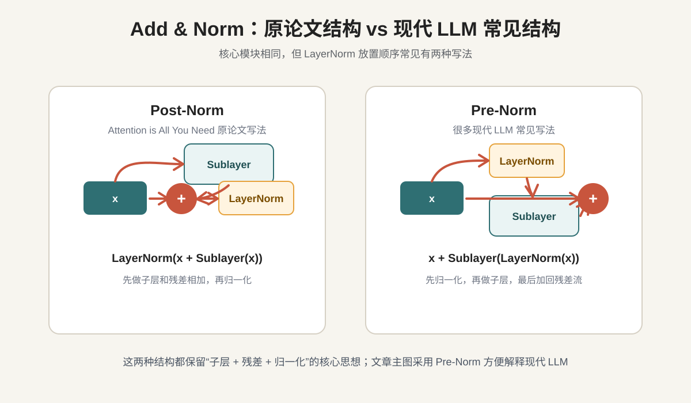
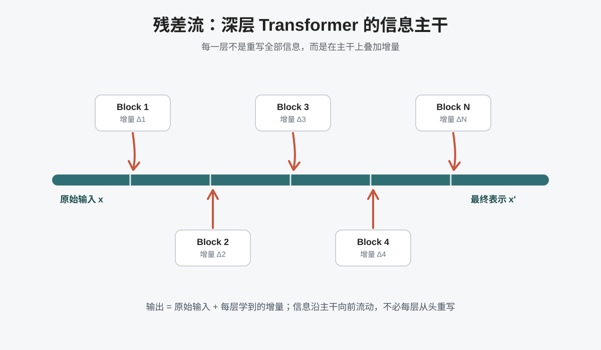
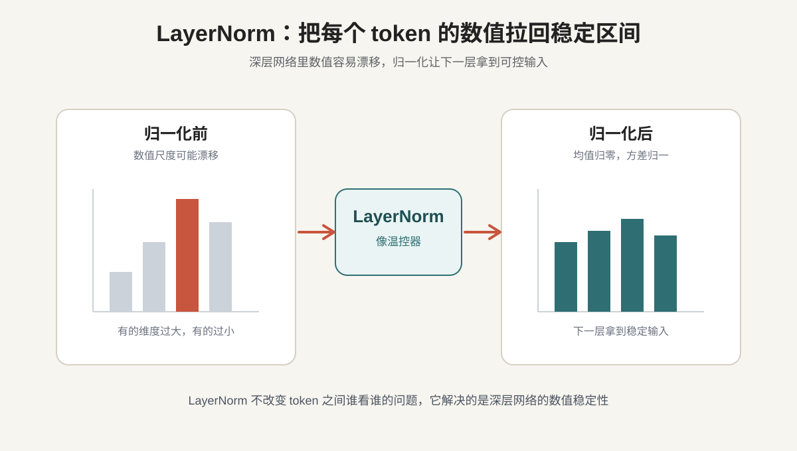
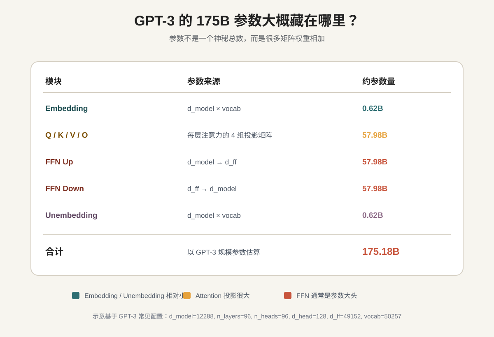

前两篇我们已经拆了两层问题。
第一篇讲 Transformer 为什么重要：它让 token 不再只是按顺序传话，而是能在上下文关系网里理解自己。第二篇讲 Attention 怎么算：每个 token 生成 Q、K、V，用 Q 和 K 判断该看谁，再按权重汇总 V。
但 Attention 还不是完整的 Transformer。
真正支撑 LLM 一层层堆起来的，是一个更完整的单元：Transformer Block。
如果把 LLM 想象成一栋高楼，Transformer Block 就是反复堆叠的标准楼层。每一层都做三件事：
一、Attention 只解决了"交流"，还没解决"加工"
Attention 很强，但它主要解决的是 token 之间的信息交流。比如句子：
银行旁边的河流很清澈。
Attention 可以让"银行"关注"河流"，从而把"银行"的含义从金融机构修正成河岸。但这只是第一步。当一个 token 从上下文里收集到信息之后，还需要进一步加工：
- 哪些信息应该保留？
- 哪些信息应该压缩？
- 哪些特征应该被放大？
- 哪些模式应该转化成更高层的语义表示？
Attention 更像开会：大家交换信息。但开完会之后，每个人还要回到自己的位置上消化信息，形成新的判断。这个"消化信息"的模块，就是 FFN。
二、FFN：每个 token 的独立加工层
FFN 的全称是 Feed-Forward Network，前馈网络。在 Transformer Block 里，它通常接在 Attention 后面。两者分工非常明确：
| 模块 | 处理方式 | 作用 | 类比 |
|---|---|---|---|
| Attention | token 之间互相交流 | 收集上下文信息 | 开会 |
| FFN / MLP | 每个 token 独立处理 | 消化和转化信息 | 散会后独立思考 |
注意，FFN 不会让 token 之间互相看。它是对每个 token 的向量单独做非线性变换——position-wise 的，对每个位置分别应用，同一层里不同位置共享同一组 FFN 参数。
原论文里的 FFN 形式：
FFN(x) = max(0, xW₁ + b₁)W₂ + b₂这里的 max(0, ·) 是 ReLU 激活函数。现代 LLM 里会出现 GELU、SwiGLU、MoE 等变体，但核心思想不变：Attention 负责跨 token 搬信息，FFN 负责对每个 token 的表示做非线性加工。
为什么需要 FFN？因为 Attention 本质上主要是在做加权求和——很擅长把信息从不同 token 搬过来，但如果只有这种线性混合，模型的表达能力会受限。FFN 提供非线性变换，让模型能学到更复杂的模式。
也有研究观察到，Transformer 里的很多事实性知识和模式可能大量存储在 FFN 参数中。FFN 是 Transformer 里非常重要的信息加工和参数承载部分。
三、完整 Block：两次处理，两次加回主干
一个常见 Transformer Block 可以概括成两组结构。
第一组处理 token 之间的关系：
- LayerNorm：先把输入数值稳定住。
- Multi-Head Attention：让 token 之间交流上下文信息。
- 残差相加：把 Attention 的结果加回原来的信息主干。
第二组处理单个 token 的加工：
- LayerNorm：再次把数值稳定住。
- FFN：每个 token 独立加工信息。
- 残差相加：把 FFN 的结果加回信息主干。
写成简化形式：
x = x + Attention(LayerNorm(x))
x = x + FFN(LayerNorm(x))这里的 x 就是残差流——模型内部不断向前传递的 token 表示。

这个图里最重要的不是某个模块的名字，而是结构关系：LayerNorm 稳定输入，Attention / FFN 产生增量，残差连接把增量加回主干。
这里有一个小但重要的历史细节。原论文 Attention is All You Need 更接近 Post-Norm：先经过子层，再做残差相加，最后 LayerNorm。而很多现代 LLM 更常见的是 Pre-Norm：先 LayerNorm，再进入 Attention 或 FFN，最后把结果加回残差流。

四、残差连接：为什么深层模型不会把信息洗掉？
如果没有残差连接，深层网络会遇到一个很直观的问题：每一层都会改写输入。层数少的时候还好；层数一多，最早的原始信息可能被一层层变换冲淡。训练时也会出现类似问题：梯度从输出往回传，如果每层都让梯度衰减一点，传到底层时可能几乎没信号了。
残差连接的做法很简单：
输出 = x + F(x)F(x) 是这一层学到的变化量，x 是原始输入，直接保留下来。这意味着每一层不必从头生成一个全新的表示，而只需要学习：相比原来的 x，我应该增加什么？
它让模型从"每层重写全部内容"，变成"每层在主干上添加增量"。

可以把残差流想象成一条贯穿模型的主干公路。Attention 和 FFN 都不是单独接管信息流，而是像主干旁边的处理站：它们处理当前信息，然后把处理结果作为增量加回主干。
所以 Block 之间真正传递的，不是某一个模块孤立的输出，而是不断被叠加、不断被丰富的残差流。
五、LayerNorm：为什么很多层叠起来不会数值爆炸？
残差连接解决了信息和梯度通路的问题，但深层网络还有另一个麻烦：数值稳定。每一层都会做矩阵乘法、加权求和、非线性变换。如果数值每层都稍微变大一点，几十层之后可能会变得非常夸张，导致训练不稳定。
LayerNorm 的作用，就是把每个 token 的向量拉回一个稳定范围。它会对同一个 token 向量内部的各个维度做标准化，让均值接近 0，方差接近 1。
LayerNorm 不是负责理解语言，而是负责让每一层拿到数值稳定的输入。

这也是为什么现代 Transformer 常常使用 Pre-Norm 结构：先 LayerNorm，再进入 Attention 或 FFN。这样每个子模块在开始计算之前，都能拿到相对稳定的输入。
六、为什么 Block 可以堆很多层？
现在可以回答这个关键问题了。因为每个组件解决的问题不同，而且刚好互补：
- Attention 解决跨 token 通信：我应该从上下文里看谁？
- FFN 解决逐 token 加工：我拿到信息后，应该怎么消化和变换？
- 残差连接 解决深层信息通路：原始信息和梯度怎样穿过很多层？
- LayerNorm 解决数值稳定：每一层的输入怎样保持在可控范围？
这四件事组合起来，才让 Transformer 不只是一个 Attention 公式，而是一个可以大规模训练、可以稳定加深的架构。
原论文 base model 是 6 层，d_model=512，8 个 head，FFN 中间维度 2048。今天的 LLM 在层数、宽度、参数量上已经大得多，但一个 Block 的基本分工仍然能从这篇论文里追溯出来。
七、175B 参数到底从哪来？
以 GPT-3 的常见配置来估算：d_model=12288，n_layers=96，n_heads=96，d_ff=49152，vocab=50257。
参数量主要来自这些矩阵：
- Embedding：把 token ID 映射成向量。
- Q / K / V / O 投影：Attention 里负责生成 Query、Key、Value 和最终输出。
- FFN Up projection：把向量升到更高维的中间层。
- FFN Down projection：再把中间层压回
d_model。 - Unembedding：把最终隐藏向量映射回词表 logits。

Embedding 和 Unembedding 听起来很重要，但在 GPT-3 规模下各自只有约 0.62B 参数。Q、K、V、O 四组 Attention 投影合起来约 57.98B。而 FFN 的 Up + Down projection 合起来超过 115B。
LLM 的参数，本质上就是一层层矩阵里的可学习权重。训练过程就是不断调整这些权重，让模型在上下文中更准确地预测下一个 token。
八、层数越深，模型学到的东西越抽象
每层都长得差不多，那它们学到的是同样的东西吗？通常不是。可以粗略这样理解：
| 层次 | 更可能处理的内容 |
|---|---|
| 浅层 | 词形、标点、局部搭配、简单语法 |
| 中层 | 主谓宾、从句结构、指代关系 |
| 中深层 | 语义关系、事实模式、上下文整合 |
| 深层 | 多步推理、任务意图、复杂规划 |
这不是说每一层都有严格固定分工，而是说深层模型往往会形成不同抽象层次。浅层更像在处理"文字和句法"，深层更像在处理"语义、任务和推理"。
这也是为什么 LLM 不是只靠某一个神奇模块工作，而是靠很多层反复更新 token 表示。每一层都在问：基于目前的上下文表示，我还能补充什么增量？
九、把这篇文章压缩成一句话
Attention 负责跨 token 交流，FFN 负责逐 token 加工，残差连接负责保留信息主干，LayerNorm 负责稳定数值。
理解了这个结构，很多后续问题都会变得更自然：为什么 Transformer 可以堆很多层？为什么 Attention 后面还要接 FFN？为什么每层都有残差连接？为什么 LLM 的能力会随着层数和参数规模增长？
下一篇，我们就可以继续往训练侧走：LLM 不只是有架构，还要通过大量数据训练。模型是如何从"预测下一个 token"一步步变成"会回答问题"的？